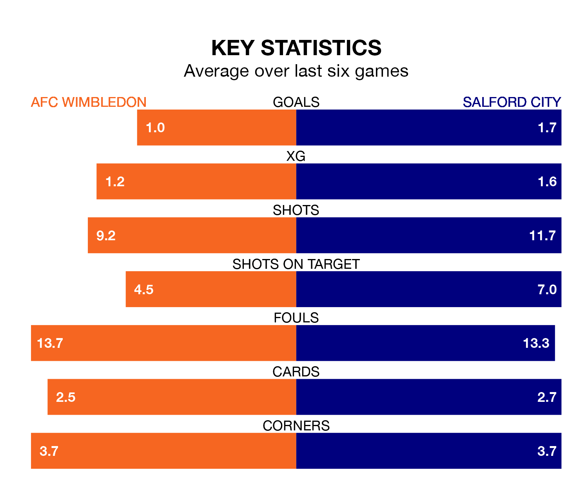

AFC Wimbledon host Salford City on Saturday at the Cherry Red Records Stadium in EFL League Two.
In their last league match, on Monday, Wimbledon lost to Stockport County 1-0 away.
Salford also lost, 2-1 away at Walsall, with Matthew Lund scoring their goals.
In Matt Smith, Salford have one of the league's most on-form strikers so far this season. He has notched 23 goals in 42 appearances, to sit second in the scoring charts.
His goal rate of one every 146 minutes is slightly quicker than that of Ali Al-Hamadi, Wimbledon's top scorer with a goal every 152 minutes, and a total of 13 goals in 23 games.
With 54 goals in 42 games so far this season, the Dons are scoring at below the league average rate with 1.3 goals per game. But they are conceding fewer than average too, letting in 44 goals at a rate of 1.0 per game.
City, meanwhile, are average scorers, with 1.5 goals per game. They have conceded 1.8 goals per game.
The Ammies are 20th in the table after 42 games, of which they have won 12 and drawn 11, earning 47 points.
The home side are 10 places ahead of the visitors in 10th, with 15 wins and 14 draws putting them on 59 points.
Wimbledon are in mixed form in EFL League Two, with two wins and two draws from their last six games.
With two wins and a draw over that period, Salford's form is slightly worse – they have taken seven points from 18, compared to Wimbledon's eight.
In the last three years, Wimbledon and Salford have played each other on three occasions. Salford won one of them and they drew the other.
Their last meeting was on December 16, when they played out a 0-0 draw.
Updated: 16:41 (UTC), 04/04/24